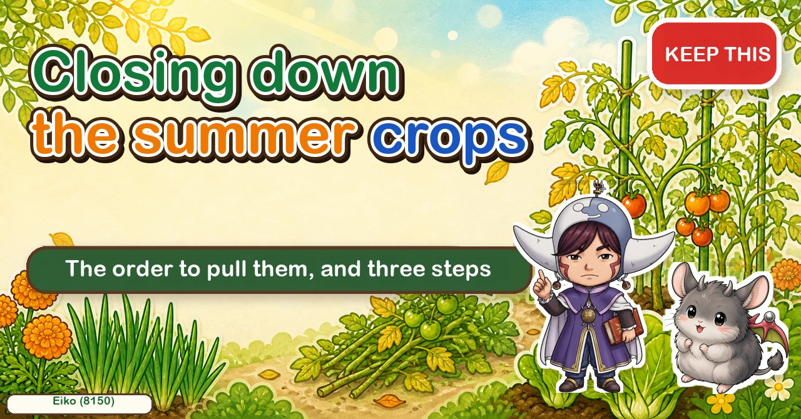
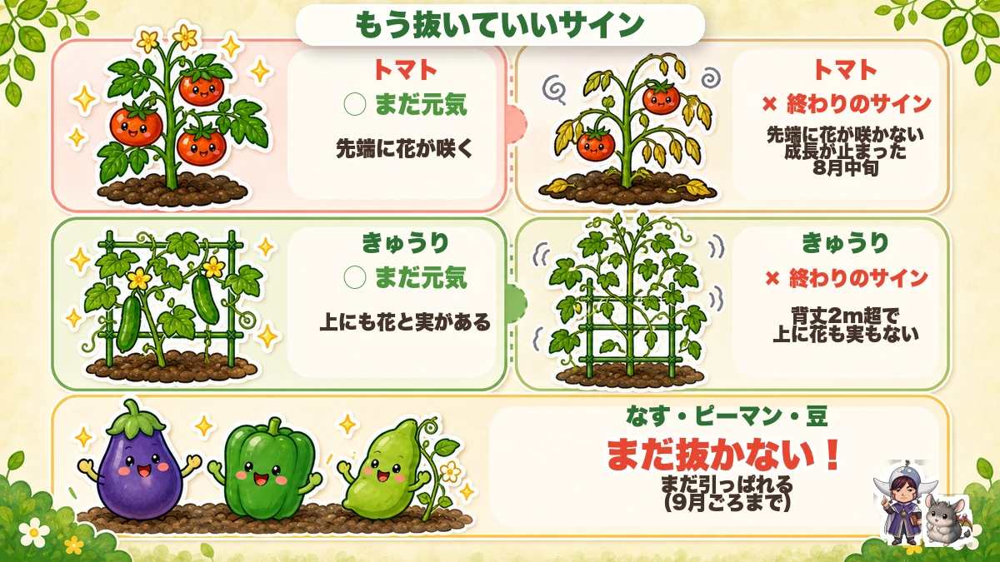
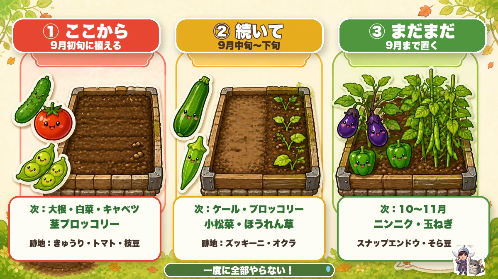
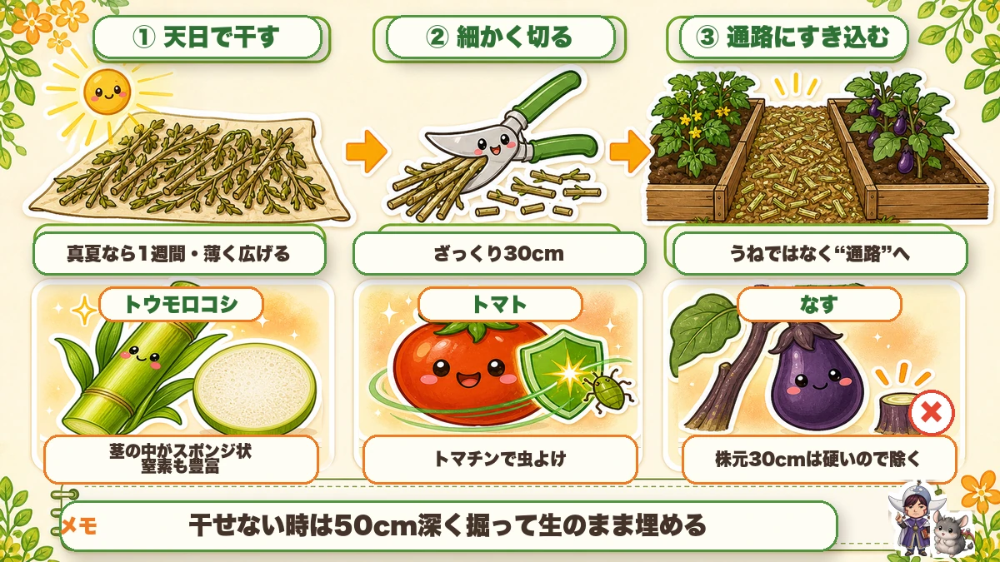
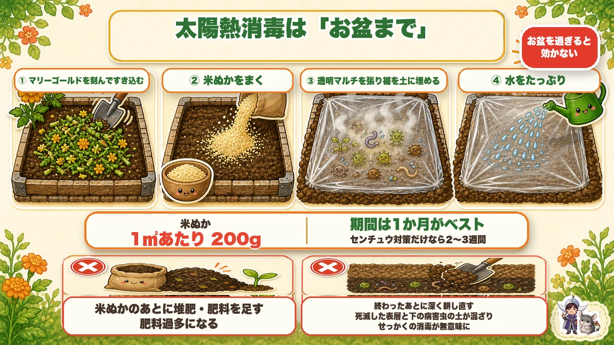
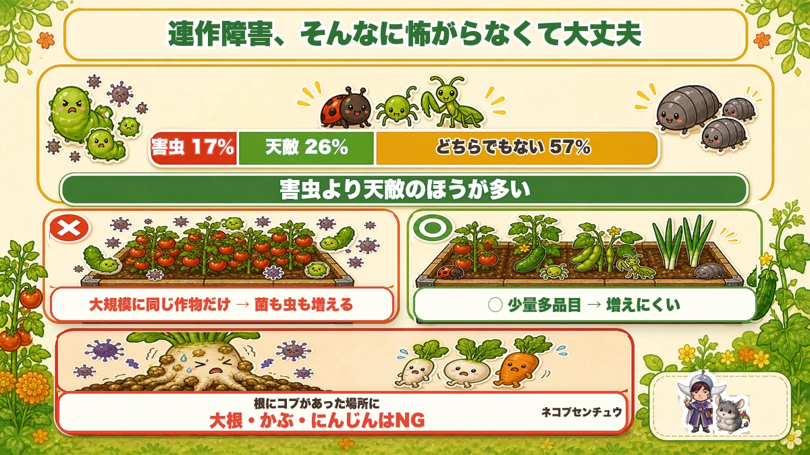
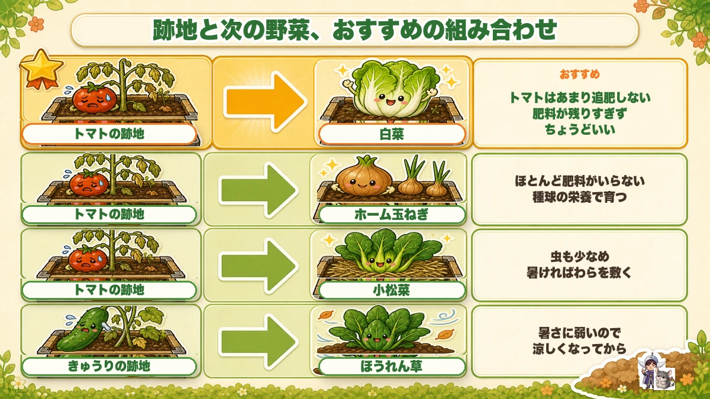
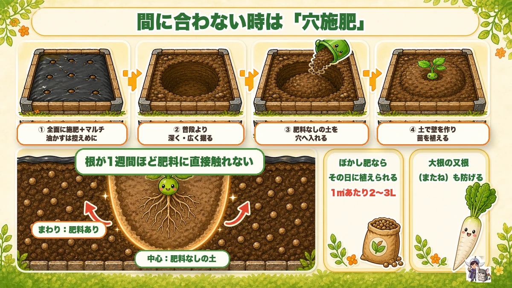

Closing down the summer crops 🍂 The order to pull them, and three steps that make autumn easy

🗨️ "I never know when to pull the summer crops."
🗨️ "Clearing it all in the heat is genuinely hard work."
🗨️ "And then what do I do with the soil?"
Hello, I'm Eiko. Eight years of growing vegetables organically and without pesticides, and a teaching licence in science.
This job decides about half of how the winter crops turn out — and it doesn't need to be daunting. One thing to take away:
Split the clearing into three, and don't throw the stems away.
That protects both your back and your soil ☺️
Three steps: ① clear ② return the stems to the soil ③ let the sun reset it.
When is a summer crop finished?

What this diagram says （図解の文字）
- Signs that you can pull it now
- Tomato ○ still going — flowers at the tip ／ × finished — no flowers at the tip, growth stopped
- Cucumber ○ still going — flowers and fruit up top ／ × finished — over 2 m with nothing at the top
The urge to hang on for a few more fruits is universal. I do it every year. But the signals are clearer than you'd think.
Tomato: when the tip stops flowering
Look at the top of the plant. If the tip is still extending but no longer setting flowers, and growth has stalled, that's the switch-over. Once the lower leaves start going and disease or heat damage sets in, it does not come back.
By truss: when truss five is colouring, truss seven is small and sparse, and truss eight has dropped most of its flowers — that's the end of it.
Cucumber: over 2 m with nothing at the top
Past 2 m with no flowers or fruit in the upper part, it's done. Fruit that does set up there costs the plant so much to supply that you only get misshapen ones. If a side shoot still carries fruit, keep just that one going.
Aubergines, peppers and beans can keep going
These three crop for weeks longer. Don't pull them yet.
Pull in three waves

What this diagram says （図解の文字）
- ① first ／ ② next ／ ③ later
- ① first — beds planted early autumn. Next: mooli, Chinese cabbage, cabbage, sprouting broccoli. Clearing: cucumbers, tomatoes, edamame
- ② next — mid to late autumn. Next: kale, broccoli, mustard greens, spinach. Clearing: courgettes, okra
This is the part that matters most. Deciding to "clear the whole lot today" in high summer does not end well.
I tried it one year: three hours in, a headache that sitting in the shade didn't fix, and I went home. Push on and that's the usual result 😇
So split it bed by bed — and what goes in next decides the order automatically.
① First — beds that get planted earliest
Mooli, Chinese cabbage, cabbage, sprouting broccoli, cauliflower, romanesco, Brussels sprouts.
These won't bulk up if they go in late — romanesco and Brussels sprouts especially finish with a small head if delayed.
So clear cucumbers, tomatoes and edamame — whatever can come out now — and use those beds.
② Next — beds planted a few weeks later
Kale, broccoli, mustard greens, spinach. Broccoli still heads up if it's slightly late, and a late variety of spinach has a longer window. Courgette and okra beds suit this wave.
③ Later — beds you leave until the autumn is over
Aubergines, peppers, beans, late sweetcorn. These are still cropping, so leave them — and keep those beds for garlic, peas, onions and broad beans later on.
Write the three groups down once and "what am I doing today?" stops being a question.
Don't throw the stems away

What this diagram says （図解の文字）
- ① dry in the sun ／ ② chop up ／ ③ fork into the paths
- ① a week in high summer, spread thinly
- ② roughly 30 cm lengths
- ③ into the paths, not the beds
- Sweetcorn — the stem is spongy inside, and rich in nitrogen ／ Tomato — tomatine deters insects
- Spread the pulled plants thinly and dry them in the sun — about a week in high summer
- Chop them roughly, to about 30 cm
- Fork them into the paths — not the beds
Two reasons it's worth it: sweetcorn stems are spongy inside and rich in nitrogen, and tomato material contains tomatine, which deters insects.
Into the paths, because that's where material can break down slowly without sitting in the root zone of the next crop.
Solarising: only while it's hot

What this diagram says （図解の文字）
- Solarising works only while the heat lasts
- Past midsummer it stops working
- ① chop marigolds in ／ ② scatter rice bran ／ ③ lay clear plastic and bury the hem ／ ④ water thoroughly
- Rice bran, 200 g per square metre
- A month is best; two to three weeks if you're only after nematodes
- Chop marigolds into the bed
- Scatter rice bran, about 200 g per square metre
- Lay clear plastic and bury the hem in soil
- Water thoroughly underneath it
A month is ideal; two to three weeks if nematodes are the only target.
And the deadline is real: once the fiercest heat has passed it stops working. There isn't enough sun left to cook the soil.
The science: replant problems aren't as frightening as they sound 🔬

What this diagram says （図解の文字）
- Replant problems — not as frightening as they sound
- Pests 17% ／ natural enemies 26% ／ neither 57% — there are more natural enemies than pests
- × large areas of one crop → both fungi and insects build up
- ○ small amounts of many crops → they don't build up
- Where you found knots on the roots, don't follow with mooli, turnips or carrots
The organisms in soil are not mostly enemies. In the figures quoted here, pests make up 17%, their natural enemies 26%, and 57% are neither. There are more predators than pests.
What creates a problem is scale and monotony: a large area of one crop lets both fungi and insects build up. Small quantities of many crops — which is what a home garden is — resist that by default.
One concrete caution: if you found knots on the roots of what you pulled (root-knot nematode), don't follow it with mooli, turnips or carrots.
What to follow what

What this diagram says （図解の文字）
- Good combinations of previous bed and next crop
- After tomatoes → Chinese cabbage (recommended) — tomatoes aren't fed much, so not too much fertiliser is left: about right
- After tomatoes → onion sets — they need hardly any feed; they grow on the set's own reserves
- After tomatoes → mustard greens — few insects too
The principle is how much fertiliser the previous crop left behind.
Tomatoes are fed sparingly, so a tomato bed has little residual fertiliser — which suits Chinese cabbage, onion sets (which grow largely on the set's own reserves and want very little feed) and mustard greens.
If you've run out of time: spot feeding

What this diagram says （図解の文字）
- No time? Use spot feeding
- ① feed the whole bed and mulch — go easy on the oilseed meal
- ② dig deeper and wider than usual
- ③ put unfed soil into the hole
- ④ build a wall of that soil and plant into it
- The roots don't touch fertiliser directly for about a week ／ around: fed ／ centre: unfed soil
Soil preparation normally wants a couple of weeks before planting. When you don't have them:
- Feed the whole bed and lay the mulch — go easy on concentrated feeds
- Dig the planting hole deeper and wider than usual
- Put unfed soil into the hole
- Build a wall of that unfed soil and plant into the middle of it
The effect: the roots don't meet fertiliser directly for about a week, by which time the feed has broken down and the plant has established. Fed soil around, unfed soil in the centre.
To sum up
- ✅ Clearing the summer crops decides about half of the winter crop
- ✅ Tomato is finished when the tip stops flowering and growth stalls
- ✅ Cucumber is finished past 2 m with nothing on top
- ✅ Aubergines, peppers and beans keep going
- ✅ Don't clear everything in one day — split it into three by what goes in next
- ✅ ① earliest plantings ② a few weeks later ③ leave until the autumn planting
- ✅ Dry the stems a week, chop to 30 cm, fork into the paths
- ✅ Solarise only while the heat lasts: marigolds, rice bran, clear plastic, water, a month
- ✅ Soil has more natural enemies than pests — small, varied plantings resist build-up
- ✅ Root knots? Don't follow with root crops
- ✅ A tomato bed suits Chinese cabbage, onion sets and mustard greens
- ✅ Out of time? Spot feeding: fed soil around, unfed soil in the planting hole
You don't have to do all of it. Write your beds down in three groups. That one sheet of paper is most of the job 🍂
Thank you for reading!